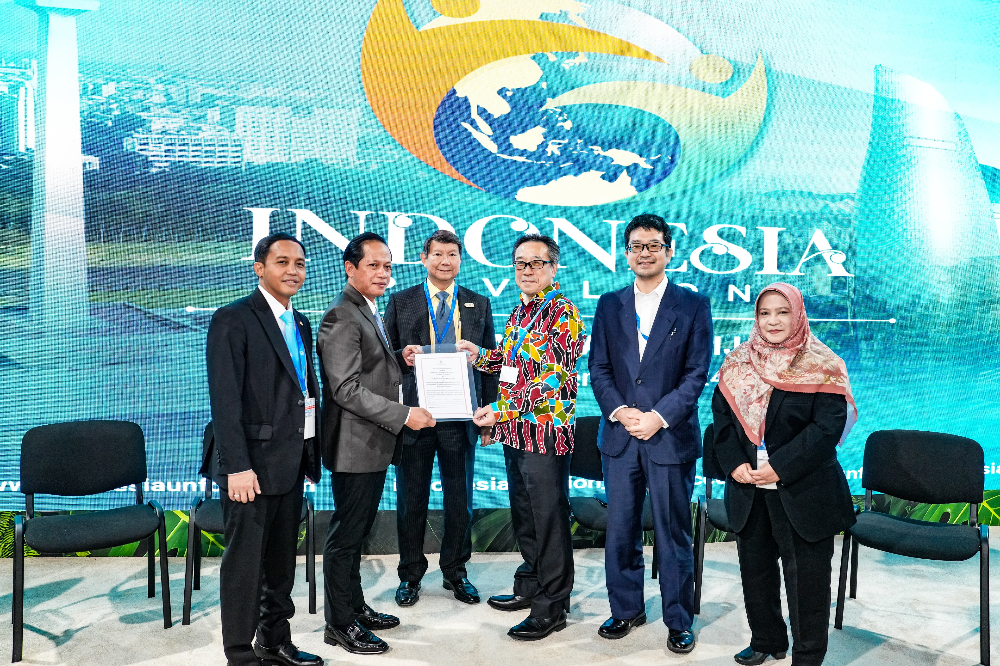
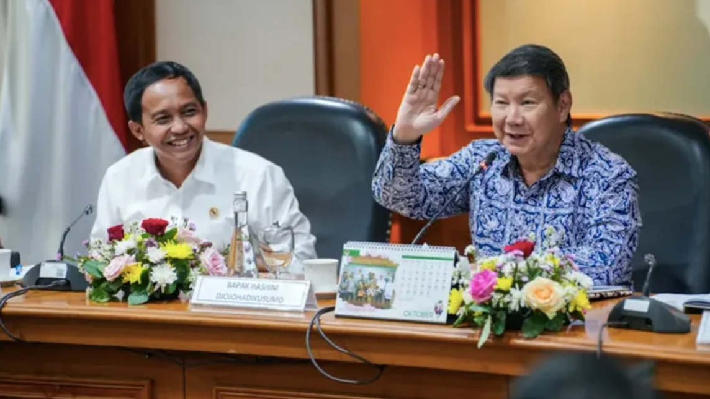
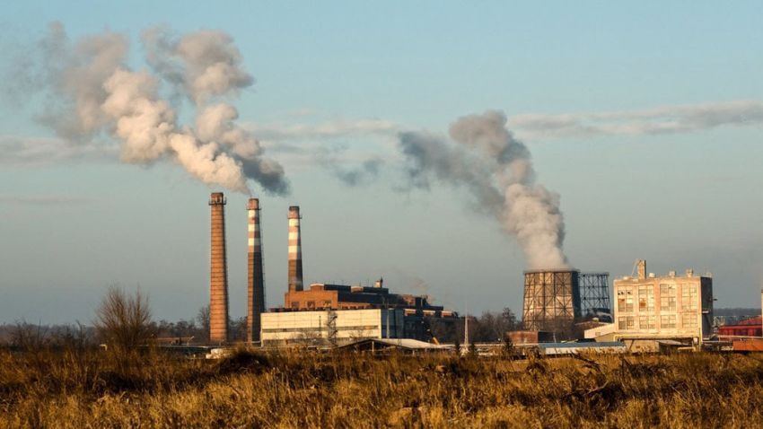

  
KERJASAMA BILATERAL
Kerja sama Bilateral merupakan hubungan yang terjalin antar dua negara yang saling menguntungkan. Dilansir dari data Kemenhub bahwa Indonesia telah menjalin kerja sama bilateral dengan 162 negara. Kerja sama bilateral ini bisa bermanfaat untuk meningkatkan produktivitas serta kualitas tenaga kerja dalam suatu negara untuk membuka lapangan kerja yang baru juga dapat memberikan kesempatan bagi warga negara sendiri untuk mendapatkan ilmu dan wawasan yang lebih luas dari negara lain yang sudah maju. Hal ini bisa terwujud dalam pemberian beasiswa kepada mahasiswa S1 atau S2 yang sekarang sudah banyak ditawarkan oleh pemerintah. Selain itu kerja sama bilateral dapat memperkuat rasa persahabatan antar dua negara dan menciptakan perdamaian dunia yang jauh lebih baik.
! Kerja sama Indonesia- Jepang meningkatkan kerja sama perdagangan kredit karbon melalui mutual recognition management !
Pada tanggal 12 November 2024 Pemerintah Indonesia dan Pemerintah Jepang telah mencapai kesepakatan bersama untuk memulai penerapan Mutual Recognition Arrangement (MRA) untuk pelaksanaan kerjasama perdagangan karbon bilateral antar 2 negara ini. Kesepakatan ini telah disampaikan di Pavilion Indonesia pada Konferensi Perubahan Iklim Perserikatan Bangsa Bangsa. Kredit karbon merupakan sertifikat yang mewakili pengurangan emisi gas rumah kaca yang dihasilkan melalui berbagai aktivitas yang mengurangi emisi karbon. Contohnya seperti penanaman pohon atau proyek konservasi alam yang mengurangi deforestasi. Pemerintah Indonesia dan Jepang dapat mengembangkan kolaborasi menuju net zero emission di antara 2 negara. Kementerian Lingkungan Hidup dan Kehutanan Indonesia serta Kementerian Lingkungan Jepang telah menyiapkan Mutual Recognition Arrangement atau MRA melalui pembahasan singkat kedua menteri negara. MRA dibangun untuk memformulasikan dan mengembangkan proyek konkret untuk pengurangan emisi di Indonesia dan berdasarkan pengalaman tersebut, kedua negara juga dapat berkontribusi untuk pengurangan emisi global. MRA disetujui atas prinsip kesetaraan antara sistem kredit karbon Indonesia dan negara mitra. Komponen sistem kredit karbon yang saling diakui oleh kedua negara mencakup metodologi aksi mitigasi, penghitungan pengurangan emisi, sistem pemantauan, pelaporan, dan verifikasi (MRV) serta sertifikasi kredit karbon. Di Indonesia, sertifikasi ini dikenal dengan nama Sertifikasi Pengurangan Emisi GRK Indonesia (SPEI). Penerapan MRA ini akan memberikan dampak yang signifikan bagi Indonesia karena sertifikat kredit karbon Indonesia akan diakui setara dengan yang berlaku di negara mitra. Pembagian atas kredit karbon yang dihasilkan akan ditentukan berdasarkan kesepakatan kedua pihak. Indonesia juga dapat memperoleh keuntungan dalam mengupayakan mitigasi perubahan iklim.